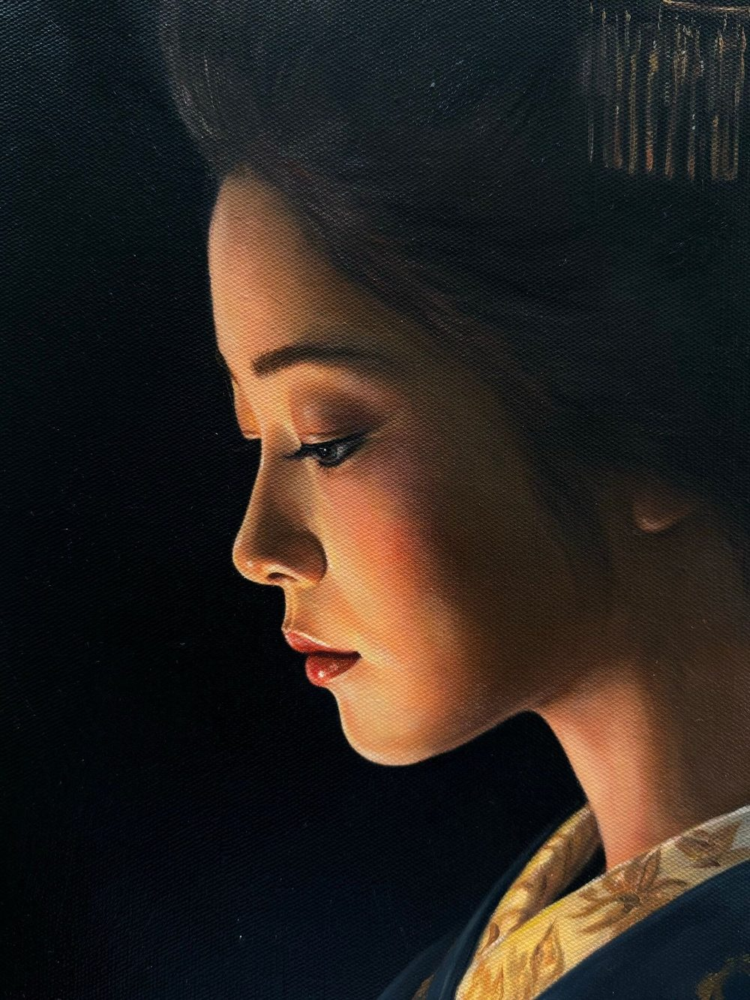

Peindre sur fond noir : comment Akari sort de la nuit
Par William San, le

Akari veut dire « la lueur » en japonais. C’est le nom de la toile que j’ai vendue en septembre au salon art3f de Monaco, et c’est peut-être la plus simple de mes peintures à raconter. Une femme de profil, en kimono bleu, baisse les yeux vers une lanterne de papier qu’elle tient devant elle. Autour d’elle, il n’y a que la nuit, et la lanterne seule éclaire son visage.
Cette lumière est la seule du tableau. Le fond est noir, d’un bord à l’autre.
Ce que je dois à Georges de La Tour
Cette toile est un hommage à Georges de La Tour, peintre lorrain du XVIIe siècle (1593-1652). Il plaçait une bougie à côté d’un personnage, et tout le tableau dépendait de cette flamme, jusqu’à l’endroit où l’œil s’arrête. Dans Saint Joseph charpentier, au Louvre, l’enfant abrite la flamme de sa main et la lumière traverse ses doigts. Dans Le Nouveau-né, au musée des Beaux-Arts de Rennes, la bougie est masquée, si bien que l’enfant semble éclairer la pièce à lui seul.
J’ai voulu reprendre ce travail de la couleur par la lumière, dans un style plus moderne et dans le mien, tourné vers le Japon. La bougie est devenue une lanterne de papier peinte de fleurs, et le personnage une femme coiffée de peignes et d’épingles. Le principe, lui, n’a pas bougé. Une seule source de lumière, et ce qu’elle n’atteint pas reste dans l’ombre.

Ce que la lanterne éclaire
Sur le stand, quand on m’a filmé pour expliquer la technique, il m’a fallu plusieurs prises avant de trouver une phrase claire. Cette phrase-là, je la garde pour l’atelier, car mes procédés m’appartiennent.
Ce qu’on voit sur la toile, en revanche, se raconte. La lanterne est l’objet le plus clair du tableau. Tout le reste est dans l’ombre, et c’est elle seule qui décide de ce qui mérite la lumière. Sur le détail ci-dessous, la joue et l’arête du nez sont tournées vers la lanterne. L’oreille et la nuque, qui ne la voient pas, restent presque dans le noir.

Où est Akari aujourd’hui
La toile mesure 60 × 60 cm. Elle a été vendue pendant le salon, au Chapiteau de Fontvieille, entre le 11 et le 13 septembre 2026, et appartient désormais à une collection privée. C’était ma première exposition à Monaco.
À Monaco, quand je présentais Akari, je traduisais son nom ainsi : la lueur, celle que tu portes en toi.
La même nuit revient dans d’autres toiles de Popsan. Tsuki, présentée au même salon, tient une lune entre ses mains au lieu d’une lanterne, dans le même clair-obscur, avec une seule lumière. Elle a trouvé preneur en octobre, au salon art3f de Luxembourg.
D’autres sont toujours disponibles. À gauche sur la photo de Monaco Info, Le passage de la nuit montre une femme sous un parapluie qui traverse un passage piéton, la nuit, devant la vitrine allumée d’un konbini. C’est elle que j’ai présentée au micro ce jour-là. Elle aussi mesure 60 × 60 cm, et je l’ai décrite ainsi sur le stand : le passage entre un avant et un après, comme un portail.
Au bord droit de la même photo, Shūden, disponible elle aussi, veut dire « dernier train » en japonais. Un homme seul y attend sur un quai, la nuit, au bord de la bande jaune. J’ai voulu qu’il ressemble un peu à tout le monde : il peut te ressembler, il peut me ressembler.